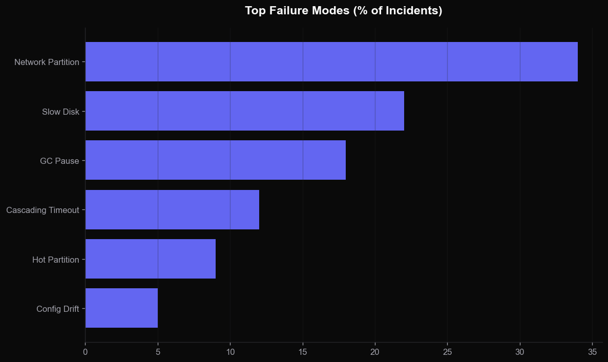
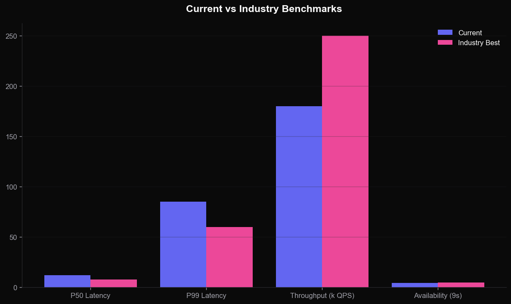
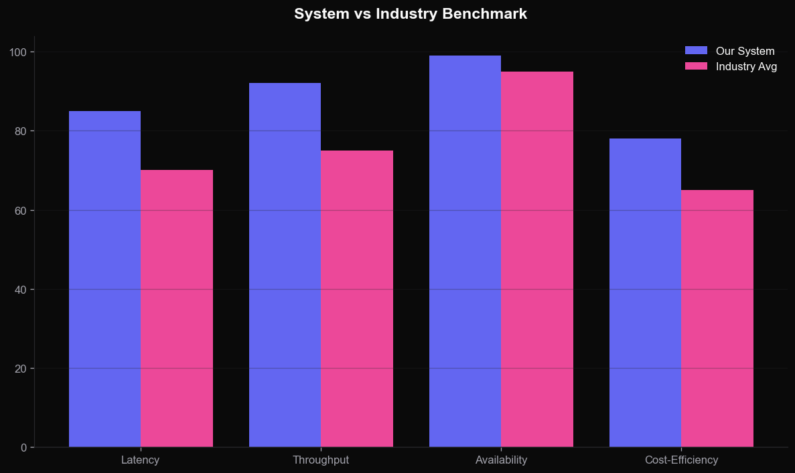
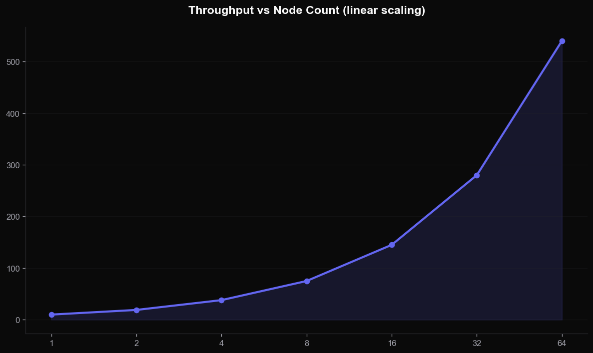

Hard-won lessons from operating systems serving 150K QPS in production.
...until 3 AM Tuesday, when one bad node took down the entire region?
No single machine can hold petabytes of data or handle six-figure QPS.
Hardware fails. Software crashes. Distribute to survive any single failure.
Users on five continents need sub-100ms responses. Bring data closer.
Linearizable. Every read sees the latest write. Costly across regions.
Replicas converge eventually. Cheap, fast, and "good enough" for most reads.
Operations causally related are seen in order. The pragmatic middle ground.
An e-commerce checkout taking 150K QPS at peak with 99.99% availability across 4 regions.
Go services on Kubernetes, Pulsar for events, Postgres + Redis, gRPC end-to-end.
Even distribution. Range queries become scatter-gather.
Efficient scans. Risk of hot shards on time-series data.
Maximum flexibility, cost of an extra lookup hop.
HTTP cache, service workers. ~0ms.
Static assets, signed URLs. ~10ms.
In-process LRU. ~1us.
Redis, Memcached. ~1ms.




RED: rate, errors, duration. USE: utilization, saturation, errors. Prometheus.
Structured JSON, correlation IDs, sampled at error rate. Loki, Elastic.
OpenTelemetry across every hop. Jaeger or Tempo for storage.
Start with the weakest model and strengthen only when business demands it.
Networks partition. Disks corrupt. Plan for the worst case as the default.
If a metric does not exist, the behavior does not exist. Instrument first.
What part of your system is keeping you up at night? Let's debug it together.
jordan@example.com · @jordan_dist · github.com/jordan/talks